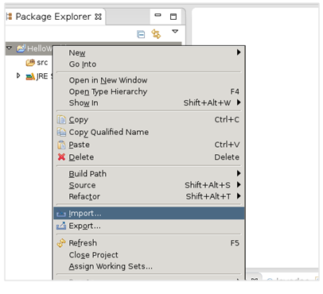
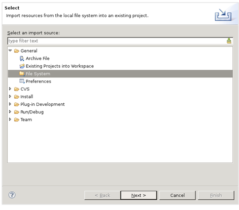
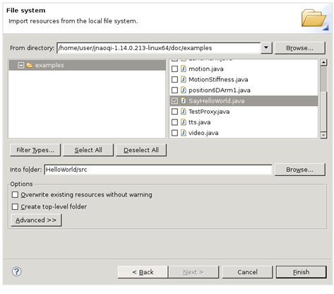
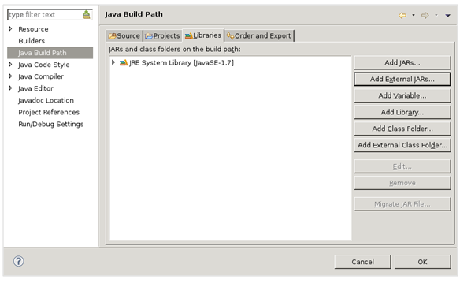
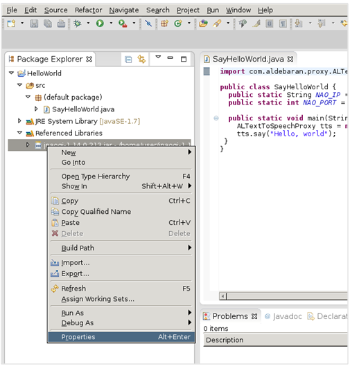
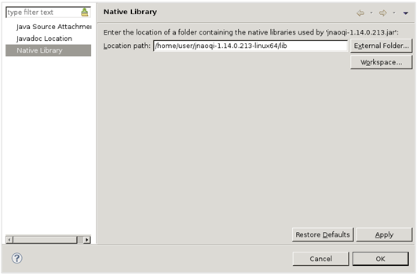

See also
Overview | C++ | Python | .Net | Java | Matlab | Urbi
Java SDK | Java installation guide | Compiling and running the examples | Compiling the Java bindings from source | Java troubleshooting | Java SDK changelog
This has been tested with latest Eclipse on Windows, Mac and Linux.
The JNAOqi SDK requires a native library to work called jnaoqi. This library should work with any JRE greater than 1.6.
| Step | Action |
|---|---|
| Create a new Java project as usual. | |
Import one of the examples files from the Java SDK as a new source.    |
|
Edit your project properties: Java Build Path > Add External Jar... > select the jnaoqi.jar file.  |
|
Edit jnaoqi.jar properties: Refresh the project, right-click on the jnaoqi.jar reference, and choose properties. Select Native Library > Location Path > External folder ... Then select the lib/ directory of the java SDK.  |
|
You should probably change the NAOQI_IP constant in the examples for the examples to work Please make sure to either use:
|
In order for Java to find the native library, you have to set the java property java.library.path. for further details, refer to the documentation of your IDE.
If you want to run your code from the command line, use something like:
java -Djava.library.path=/path/to/jnaoqi/lib -cp lib/janaoqi.jar:. SayHello